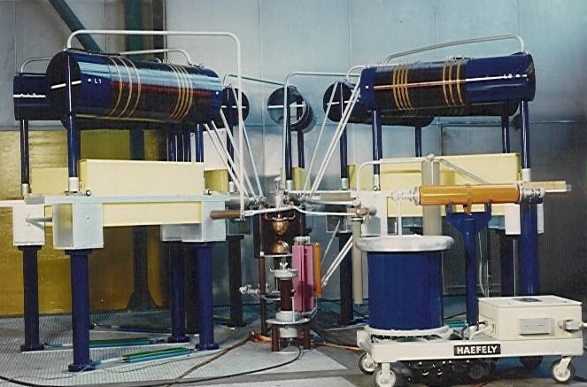

To be able to simulate the stressing of power apparatus in the power network, tests with impulse currents are performed. Lightning strokes or short circuits may cause impulse currents in the system. Waveform of an impulse current can be very different such as exponential waveform or rectengular waveform. This simulation analyzes the exponential impulse currents, therefore we will be discussing about them.
Exponential impulse currents rises fast to its peak value and decreases slowly to zero, but not always as it depends on the circuit parameters. It is possible that the impulse current crossing the zero line.
According to IEC62475 standard, this is a standard exponential impulse current with its time parameters depicted. An exponential impulse current has 3 main characteristics:
To be able to generate an exponential impulse current, capacitors are used. This is the circuit structure for creating exponential impulse currents:
Basically C capacitor is charged with direct current and discharged on to P test object over R and L with the help of FS sphere. R, L, C, Rm which is the resistor of measuring system and the impedence of the test object shape the waveform. To obtain a waveform that suits to the test that will be conducted, appropriate values of circuit parameters should be selected.
Using Kirchhoff's Laws for voltage and current we have:
Constructions of impulse current generators vary from compact table-top models with peak values of a few 10 kA to modular models where capacitors are connected in parallel with peak value of 200 kA or more. Modular setups can be arranged in a partially or totally circular arraganment. An example of a modular arraganment is shown below.

The simulator interface consists of a rough 3-D model of a modular arraganment of an exponential impulse current generator. It is possible to rotate, pan, zoom-in and zoom-out with mouse buttons on the 3-D model.
First, user determines the circuit parameters using ranges or textboxes. "Start the Experiment" button will lock the ranges and enable the "Charge Capacitors" button which will activate a progress bar to kind of imitate the slow charging of capacitors. When capacitors are charged, "Trigger Generator" button will be activated and it makes it possible to move the sphere and discharging of the capacitors at once. Lastly, according to given circuit parameters, program will print out the exponential impulse current waveform with the parameter values on top of it. The graph can be downloaded as an image, which allows users to conduct several experiments with the system and compare the end results.
The main objective with this experiment is to be able to comprehend the effects of the changing circuit parameters to the waveform of an exponential impulse current. This is not easy to do in real life certainly. It would require strict safety precautions, supervision of an attendant and, moreover, big scale high current laboratories are very few in the world. The basic reason to build this system on a web site, is to make it accesible as much as possible in that matter. This system can be used by students who want to enhance their knowledge about the topic before the actual laboratory visit or who don't have an access to an actual lab but want to learn impulse currents more deeply with the help of some visual elements involved.